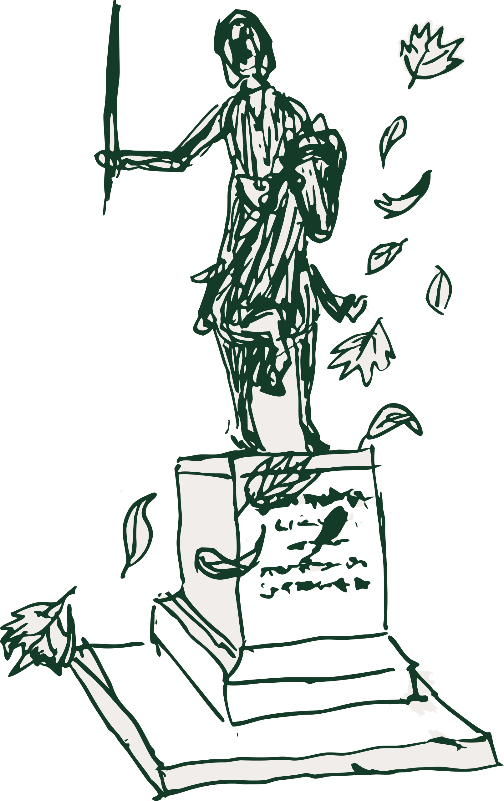

Questions & Answers

A few things we thought you might be wondering. If you still have any questions, please feel free to reach out!
How do I RSVP?
Just click this link. Once you see the confirmation screen, you know you've submitted your RSVP.
When should I RSVP by?
Please RSVP by September 1, 2026.
What is Black Tie Preferred?
Tuxedos and full-length gowns are encouraged. Dark suits with a white shirt and dark tie, or formal cocktail dresses, are also welcome.
Are plus ones allowed?
Please check your invitation, as only guests whose names are on the invitation are invited.
Can I bring my children?
Unless we have told you otherwise, we won't be able to accommodate children at the wedding. Please let us know if you have any questions.
How do I get to the venue?
The Waterfront metro station on the Green Line is a 10-15-minute walk from the venue — we encourage taking transit if you can. For full directions including options from Union Station and the airports, by transit, or by car, visit the Travel page.
Will the wedding be outdoors?
The ceremony and reception are fully indoors. There will be balconies overlooking the waterfront accessible during cocktail hour and the reception, but no need to plan around weather.